Esc или клик — закрыть
Экосистема из трёх приложений, которая закрывает весь цикл геологоразведки — от кернового ящика в поле до сдачи итоговой документации в офисе.
Геолог документирует керн в поле, буровой мастер ведёт смены и рейсы, ведущий геолог в офисе собирает всё вместе и превращает в готовые документы.
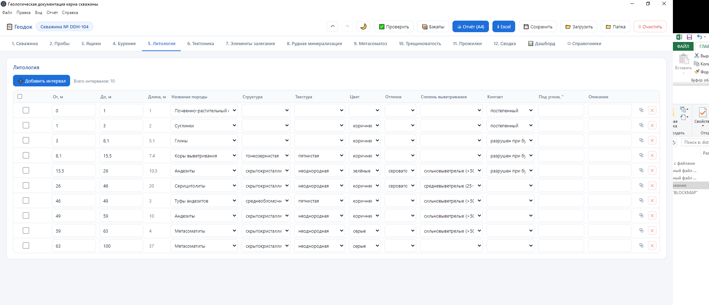
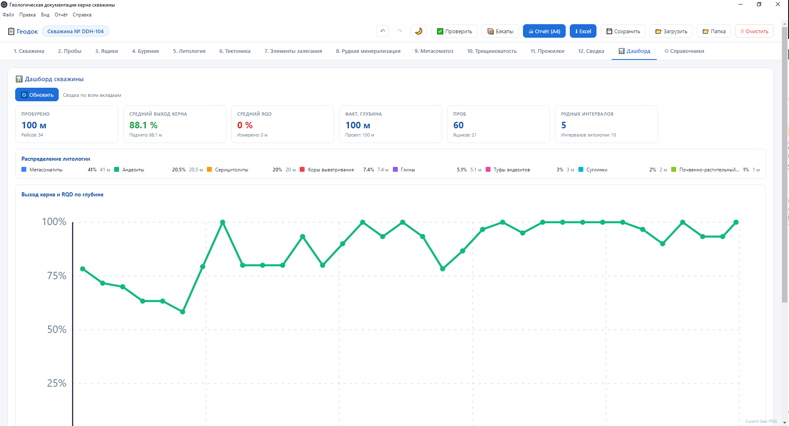
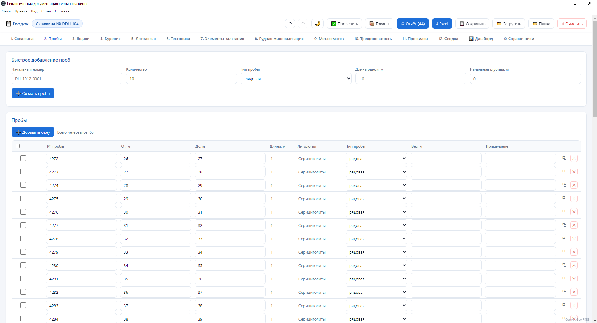
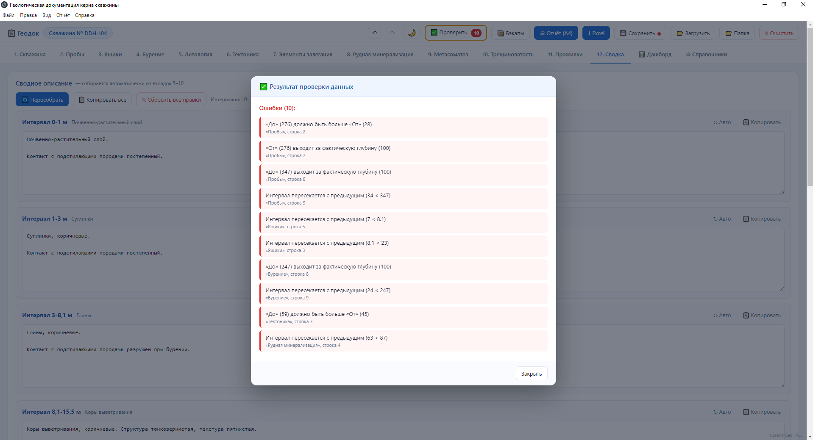
screenshots/:
geo-lithology.png
geo-dashboard.png
geo-samples.png
geo-validation.png
Все разделы в одной программе, в привычной последовательности. Работает оффлайн, на планшете и на ноутбуке. Данные не теряются.
Живая аналитика по скважине: сколько пробурено, средний выход керна, RQD, распределение по породам, кривая выхода и RQD по глубине.
Пакетное создание проб одной кнопкой, авто-привязка литологии к каждой пробе, сборка полного текстового описания интервала из всех разделов.
Программа проверяет данные по мере ввода — задолго до офиса. Ошибки подсвечиваются прямо в таблице, замечания собираются в отдельное окно.
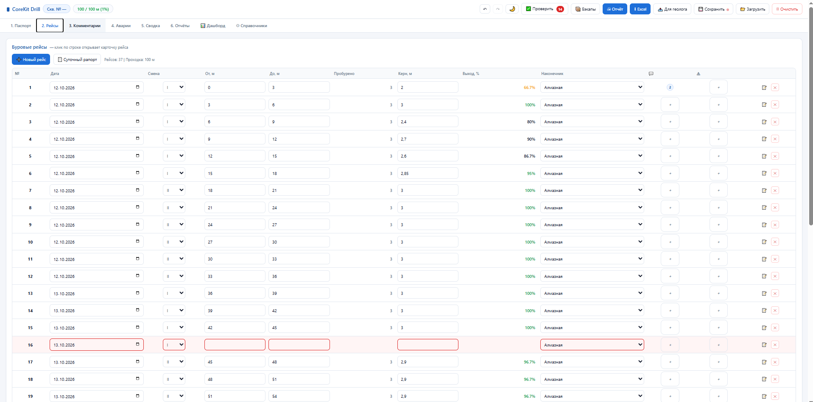
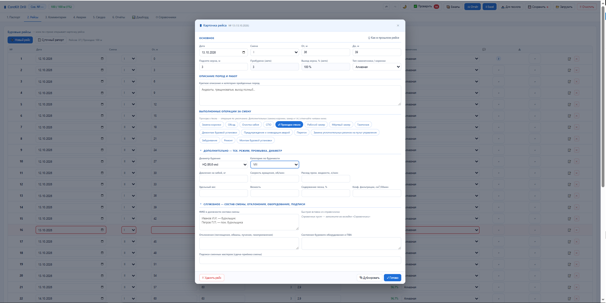
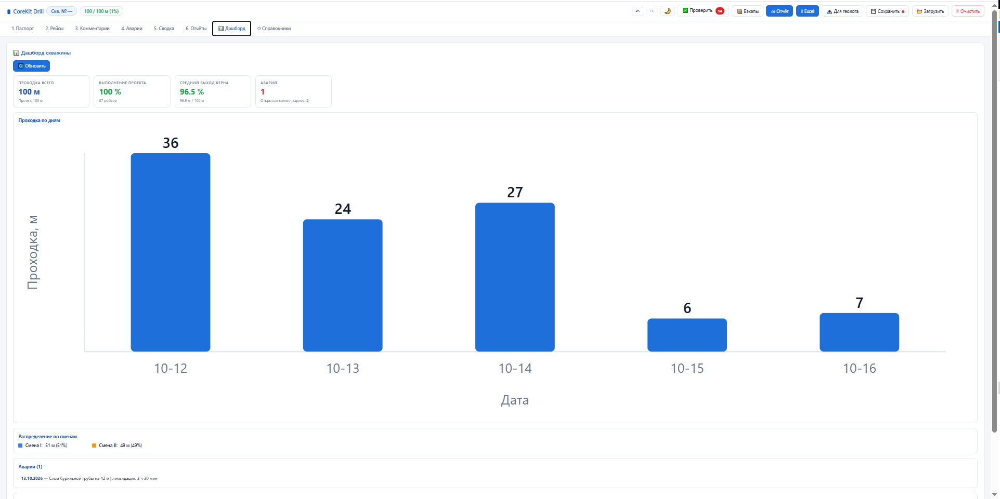
screenshots/:
drill-runs.png
drill-run-card.png
drill-dashboard.png
Электронный буровой журнал мастера. Каждый рейс — дата, смена, интервалы, керн, выход %, наконечник, диаметр, категория по буримости.
Развёрнутая карточка рейса: интервалы, тех. режим, промывочная жидкость, операции за смену — СПО, замена коронки, обсад, тампонаж, монтаж.
Геолог оставляет комментарии с приоритетом и статусом — мастер видит их прямо в карточке рейса. Дашборд показывает проходку по дням и сменам.
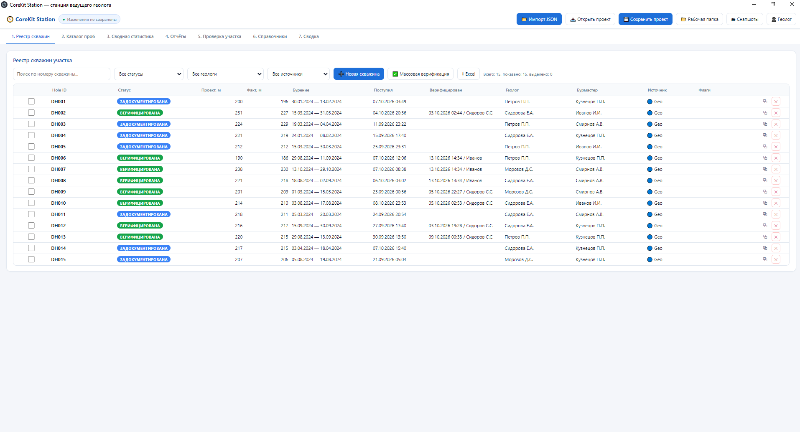
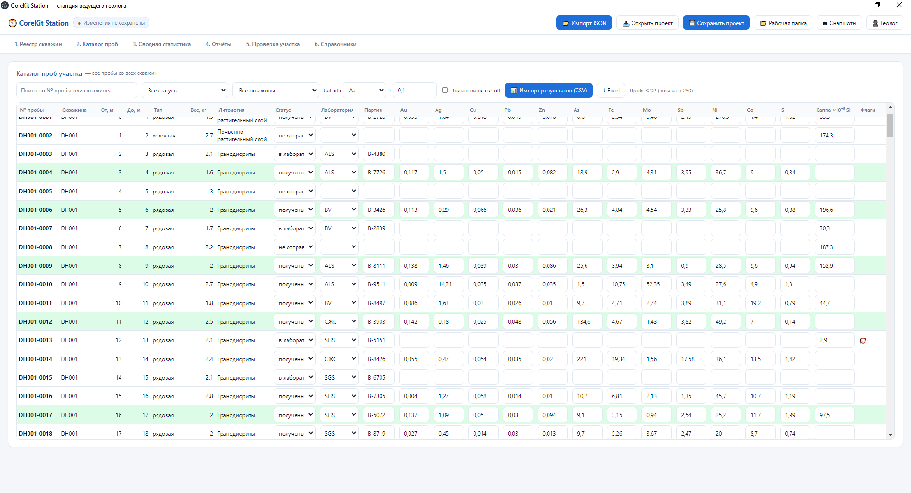
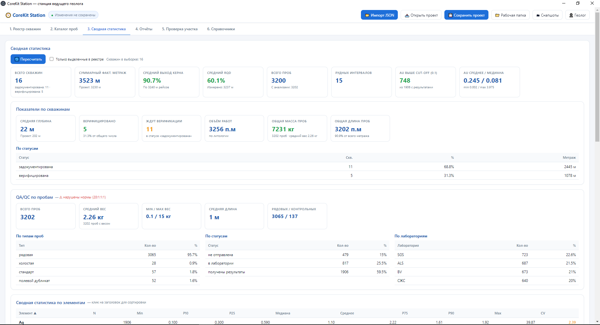
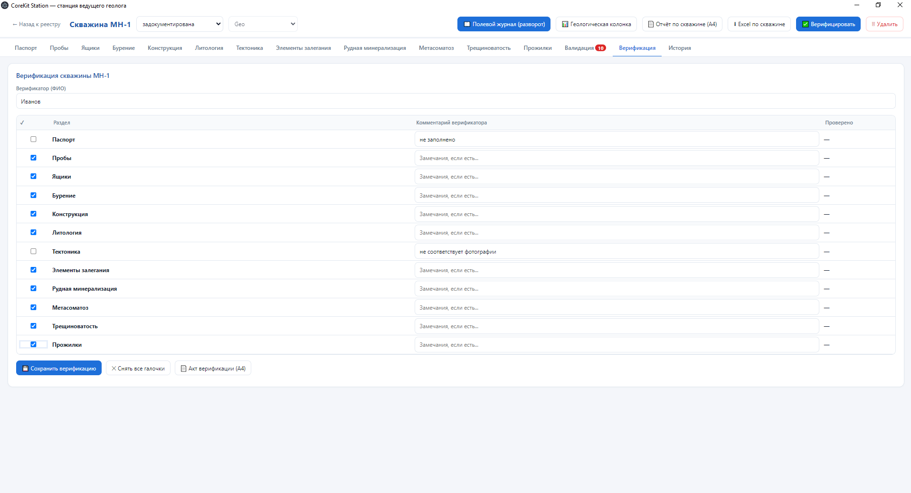
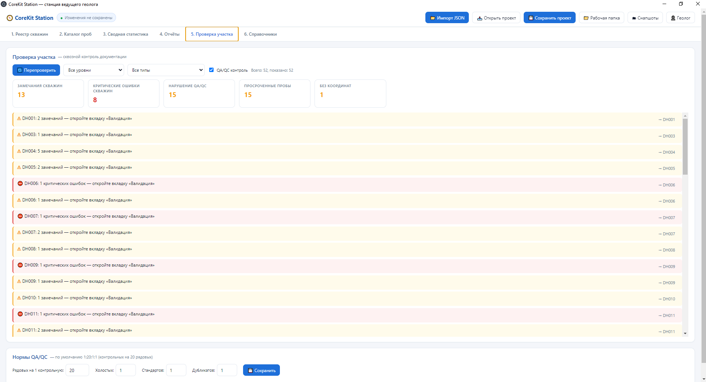
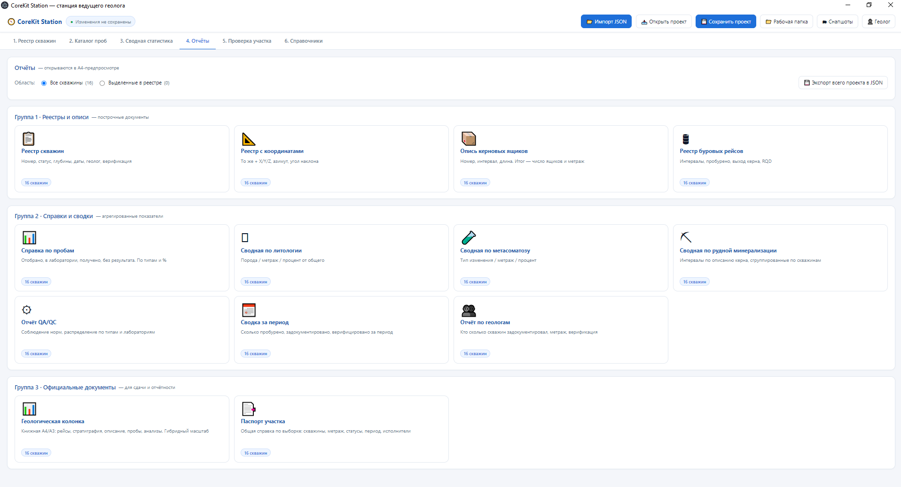
screenshots/:
station-registry.png
station-catalog.png
station-stats.png
station-verify.png
station-check.png
station-reports.png
Все скважины в одной таблице: номер, статус, глубины, даты, геолог, бурмастер, источник данных. Поиск, фильтры, массовые операции, экспорт в Excel.
Все пробы со всех скважин в одной таблице. Импорт результатов из CSV лабораторий ALS / SGS / BV. Cut-off по любому элементу с подсветкой аномалий.
Полная аналитика по метражу, породам, метасоматозу и содержаниям. Работает по всем скважинам или только по выделенным в реестре.
Второй уровень контроля после полевой валидации. Чек-лист по каждому разделу скважины, комментарии, подпись. Официальный акт A4 на выходе.
Автоматический поиск проблем не в одной скважине, а по всему участку. Ровно та логика, что и в Geo, но на уровне проекта целиком.
Готовые официальные формы для сдачи. Реестры, сводки, справки, акты — в A4-предпросмотре с печатью в PDF или выгрузкой в Excel.
То, что отличает CoreKit от обычных таблиц. Настоящий полевой журнал в формате A3-разворота и геологическая колонка с гибким масштабом — формируются автоматически и сохраняются в PDF.
Разворот A3 как в бумажном журнале: слева геологическая колонка с крапом, справа описание и таблица проб с результатами. Единицы переключаются.
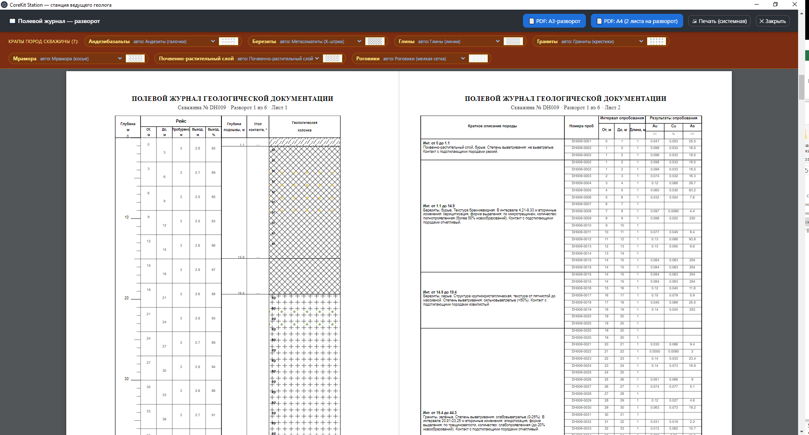
screenshots/station-journal.png
Книжный формат A4/A3. Гибридный масштаб растягивает редкие интервалы под описание, строгий держит линейную шкалу 1:200.
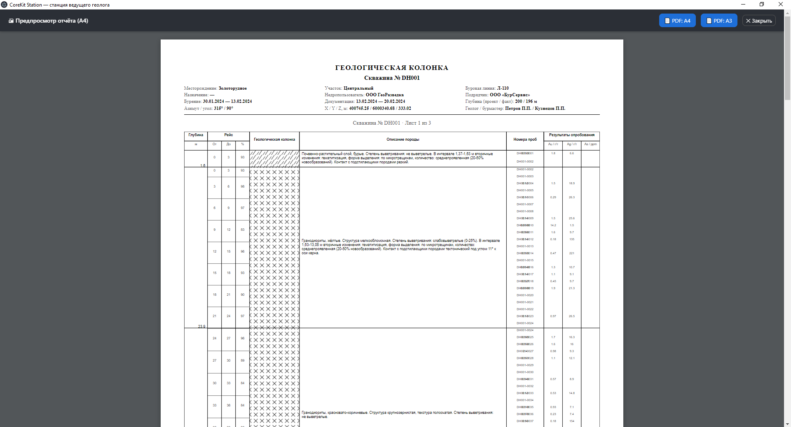
screenshots/station-column.png
Как выглядит полный цикл работы с CoreKit на примере скважины DH-104 с рудным интервалом 45–62 м.
Ведущий геолог создаёт DH-104 в реестре Station: координаты, проектную глубину, геологическое задание, назначение. Скважина пока в статусе «проектная» — ждёт бурения.
Буровой мастер ведёт смены в Drill: заполняет рейсы, тех. режим, промывку, отмечает операции и аварии. В конце смены печатает суточный рапорт A4. Геолог при необходимости оставляет комментарии — мастер видит их сразу.
Геолог документирует поднятый керн в Geo: литологию, тектонику, прожилки, руду, метасоматоз, опробование. Программа сразу подсвечивает ошибки — пересечения, разрывы, дубликаты, выход за глубину. В конце цикла — автосборка описания.
Из Drill — файл рейсов «Для геолога». Из Geo — файл .json со всей документацией. Оба сохраняются в облако или на флешку. Никаких серверов, никакой настройки сети.
Импорт файлов в Station. Автоматически создаются записи в каталоге проб, обновляется реестр. Верификация по разделам, акт верификации A4 или возврат документатору. Далее — сквозная проверка участка: руда без опробования, просроченные пробы, неполная верификация, координаты, единообразие справочников.
Полевой журнал A3-разворот, геологическая колонка, сводки по литологии и метасоматозу, рудная сводка, справка по пробам. Вся скважина — в Excel многолистовым файлом. Статистика участка обновляется автоматически.
В поле, на вахте, в офисе — оффлайн, без сервера, на слабом железе. Данные надёжно сохраняются, версии контролируются.
Свяжитесь с разработчиком, чтобы обсудить внедрение, обучение сотрудников или расширение под задачи вашего участка.